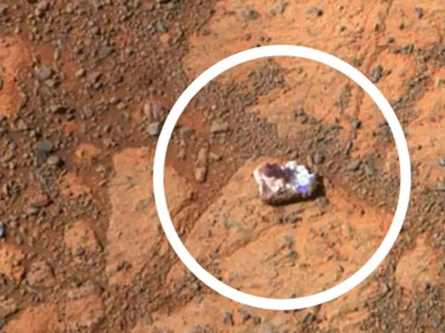

"Is it a good thing? Is that a bad thing? I don't know"
In nature, Good & Evil do not exist. The Universe itself is neither good nor bad, but a potential in permanent development.
In life, there are 4 types of people :
Up in space, turning around, looking at the earth’s face. From that rock’s perspective on Mars or that gaz opinion from Jupiter, nothing cares about your problems. Up there, it’s just not serious, and there’s no such thing as an issue. Down here, the only reality is the one inside our brain. Nothing exists if the brain doesn’t think it. Nothing exists neither if our senses don’t transmit the message. That means that if we mis sense, our reality changes. That’s possible because our perception is limited : you can’t see at 360 degrees for example. If we mis translate the message, our reality changes. If we think it in a way, our reality changes depending on that way. Therefore, if we can change reality that much, everything’s fake. They’re proofs to that. Fall in love with someone and you’ll see that person as divine. Pull yourself out of that grip and the divine falls from clouds to solid ground, revealing him or herself differently. But the person is the same, you just changed your mind. Everything works like that : it’s not just that you can make your world, it’s that you passively do it anyway.
Event |
Good or Bad |
|---|---|
| Once upon a time there was a Chinese farmer whose horse ran away. That evening, all of his neighbors came around to commiserate. They said : “We are so sorry to hear your horse has run away. This is most unfortunate.” |
The farmer said : “Is it good? Is it bad? I don't know.” |
| The next day the horse came back bringing seven wild horses with it, and in the evening everybody came back and said, “Oh, isn’t that lucky. What a great turn of events. You now have eight horses!” |
The farmer again said : “Is it good? Is it bad? I don't know.” |
| The following day his son tried to break one of the horses, and while riding it, he was thrown and broke his leg. The neighbors then said, “Oh dear, that’s too bad” |
And the farmer responded : “Is it good? Is it bad? I don't know.” |
| The next day the conscription officers came around to conscript people into the army, and they rejected his son because he had a broken leg. Again all the neighbors came around and said, “Isn’t that great!” |
Again, he said : “Is it good? Is it bad? I don't know.” |
The whole process of nature is an integrated process of immense complexity,
and it’s really impossible to tell whether anything that happens in it is good or bad —
because you never know what will be the consequence of the misfortune;
or, you never know what will be the consequences of good fortune.
Alan Watts
Good and Bad are just one perspective. Bananas are good for monkeys, but monkeys are not good for bananas. Let's not make a big deal out of it...